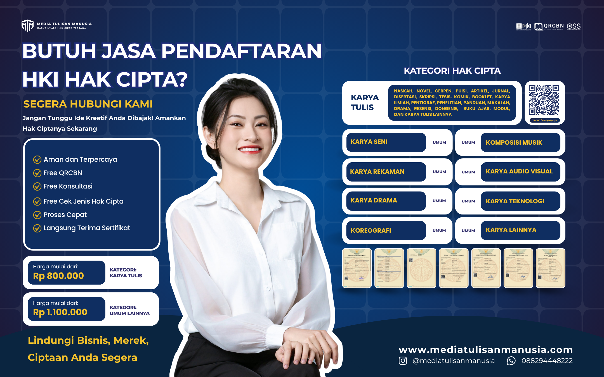

Mengenal Lebih Dekat Media Tulisan Manusia: Ekosistem Literasi dan Rumah bagi Karyamu
Ditulis oleh: Tim Redaksi MTM

Setiap manusia memiliki cerita, namun tidak semua tahu ke mana harus membawanya. Media Tulisan Manusia hadir dari sebuah keyakinan sederhana: setiap gagasan berhak menemukan pembacanya dan setiap karya serta usaha layak mendapatkan perlindungan. Kami menyadari bahwa proses kreatif tidak berhenti pada titik terakhir naskah diketik, melainkan berlanjut hingga karya tersebut terdistribusi dan entitas pengelolanya diakui secara profesional.
Sebagai ekosistem literasi yang terus bertumbuh di Jawa Timur, Media Tulisan Manusia berpusat di wilayah Sukorejo, Pasuruan, dengan dukungan penuh dari entitas induk Tulisanmanusia Group yang berbasis di Malang. Di bawah arahan kepemimpinan Ach. Sufyan Wahyudi, S.Pd., C.Ed., perusahaan ini dibangun bukan sekadar sebagai mesin pencetak buku, melainkan sebagai ruang tumbuh yang komprehensif bagi para penulis pemula, kreator profesional, hingga pelaku usaha.
Untuk memastikan setiap tahap perjalanan karya dan legalitas Anda terfasilitasi dengan baik, Media Tulisan Manusia menghadirkan empat pilar layanan terintegrasi:
1. Platform Media Sastra Digital yang Terbuka
Tidak semua naskah harus langsung menjelma menjadi buku setebal ratusan halaman. Kami menyediakan ruang publikasi digital khusus untuk karya-karya berformat pendek, mulai dari cerita pendek (cerpen), pentigraf, puisi, hingga artikel opini dan berita terkini. Platform ini menjadi kawah candradimuka bagi para penulis untuk menyuarakan gagasan, memvalidasi ide, dan membangun interaksi langsung dengan pembaca sebelum melangkah ke ranah publikasi yang lebih masif.
2. Penerbitan Buku Berstandar QRCBN
Bagi naskah yang sudah matang dan siap diabadikan, layanan penerbitan kami memfasilitasi wujud cetak maupun digitalnya. Melewati proses tata letak dan desain sampul yang dikerjakan dengan cermat, setiap buku yang lahir akan dilengkapi dengan Quick Response Code Book Number (QRCBN). Standar indeksasi ini memastikan karya Anda tercatat secara resmi, mudah diidentifikasi, dan memiliki daya saing profesional di pasar literasi.

3. Konsultasi dan Perlindungan Hak Cipta
Gagasan orisinal adalah kekayaan intelektual yang tidak ternilai harganya. Menjawab keresahan banyak kreator akan maraknya plagiarisme, kami menghadirkan layanan pendampingan legalitas Hak Kekayaan Intelektual (HKI). Layanan ini memastikan setiap jerih payah Anda mendapatkan payung hukum yang kuat, sehingga Anda bisa terus berkarya dengan tenang tanpa khawatir ide tersebut diklaim pihak lain.

4. Jasa Pembuatan Nomor Induk Berusaha (NIB)
Selain melindungi karya, kami juga memahami pentingnya fondasi legal bagi sebuah ekosistem bisnis dan komunitas. Oleh karena itu, Media Tulisan Manusia menyediakan layanan pendampingan dan pembuatan Nomor Induk Berusaha (NIB). Layanan ini dirancang untuk membantu para penulis, kreator, maupun pelaku usaha rintisan melegalkan entitas bisnis mereka secara cepat dan sesuai regulasi pemerintah melalui sistem terintegrasi.
Dedikasi kami terhadap dunia literasi dan legalitas didukung oleh fondasi operasional bisnis yang transparan. Seluruh ekosistem ini secara resmi bernaung di bawah payung hukum PT Media Tulisan Manusia, yang telah terintegrasi dengan perizinan Online Single Submission (OSS), terdata penuh di sistem AHU, serta dikelola melalui infrastruktur perbankan korporat yang mumpuni. Hal ini menjamin keamanan setiap transaksi bagi penulis, klien, maupun mitra bisnis.
Jangkauan layanan kami pun terus diperluas dengan dukungan jaringan freelance marketing yang berdedikasi di kawasan Malang, Pasuruan, dan Surabaya. Mereka hadir untuk menjemput bola, menemukan naskah-naskah hebat, dan mengedukasi masyarakat tentang pentingnya literasi serta kesadaran hukum.
Menulis dan membangun usaha sering kali menjadi proses yang penuh tantangan, tetapi Anda tidak perlu berjalan sendirian. Media Tulisan Manusia siap menjadi mitra strategis Anda untuk merawat naskah, menerbitkan buku, hingga memastikan karya dan bisnis Anda berdiri sah di mata hukum. Mari wujudkan ide Anda bersama kami, karena setiap karya selalu memiliki tempatnya sendiri.
Wujudkan Legalitas dan Publikasi Karya Anda Secara Profesional!
Media Tulisan Manusia adalah mitra strategis untuk menerbitkan buku berstandar QRCBN, mendaftarkan Hak Cipta (HKI), hingga mengurus legalitas usaha (NIB). Jangan tunda perlindungan dan distribusi aset intelektual Anda.
Mulai Sekarang